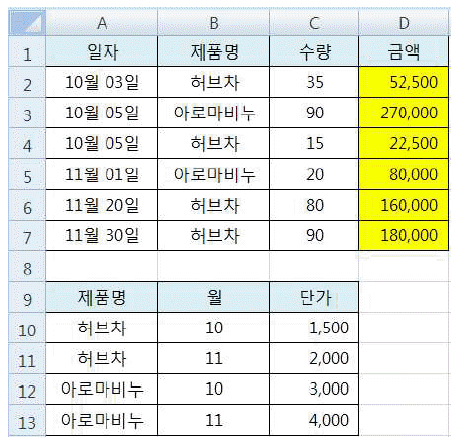
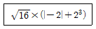
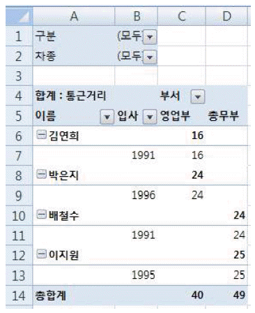
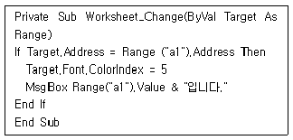
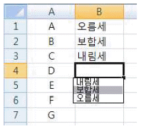
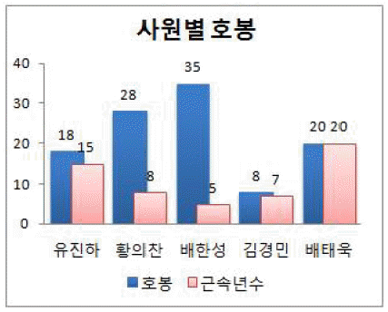
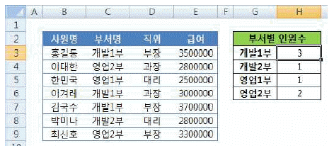
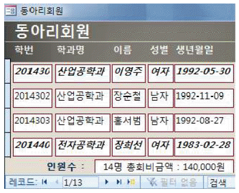
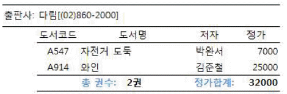

컴퓨터활용능력-1급 (2019-03-02 기출문제)
1과목: 컴퓨터 일반
1. 다음 중 컴퓨터 시스템에서 사용하는 가상기억장치(Virtual memory)에 대한 설명으로 옳지 않은 것은?
- 보조기억장치 같은 큰 용량의 기억 장치를 주기억장치 처럼 사용하는 개념이다.
- 주기억장치의 용량보다 큰 프로그램의 실행을 가능하게 한다.
- 주소 매핑(mapping)이라는 작업이 필요하다.
- 주기억장치의 접근 시간을 최소화하여 시스템의 처리 속도가 빨라진다.
(정답률: 64%)

2. 다음 중 멀티미디어에 대한 설명으로 옳지 않은 것은?
- 멀티미디어와 관련된 표준안은 그래픽, 오디오, 문서 등 매우 다양하다.
- 대표적인 정지화상 표준으로는 손실, 무손실 압축 기법을 다 사용할 수 있는 JPEG과 무손실 압축 기법을 사용하는 GIF가 있다.
- MPEG은 Intel사가 개발한 동영상 압축 기술로 용량이 작고, 음질이 뛰어나다.
- 스트리밍이 지원되는 파일 형식은 ASF, WMV, RAM 등이 있다.
(정답률: 74%)
3. 다음 중 컴퓨터에서 사용하는 EBCDIC 코드에 대한 설명으로 옳지 않은 것은?
- 확장 이진화 10진 코드로 BCD 코드를 확장한 것이다.
- 특수 문자 및 소문자 표현이 가능하다.
- 4비트의 존 부분과 4비트의 디지트 부분으로 구성된다.
- 최대 64개의 문자 표현이 가능하다.
(정답률: 76%)
4. 다음 멀티미디어 용어 중 선택된 두 개의 이미지에 대해 하나의 이미지가 다른 이미지로 자연스럽게 변화하도록 하는 특수 효과를 뜻하는 것은?
- 렌더링(Rendering)
- 안티앨리어싱(Anti-Aliasing)
- 모핑(Morphing)
- 블러링(Bluring)
(정답률: 83%)
5. 다음 중 컴퓨터 통신과 관련하여 P2P 방식에 관한 설명으로 옳은 것은?
- 인터넷에서 이루어지는 개인 대 개인의 파일 공유를 위한 기술이다.
- 인터넷을 통해 MP3를 제공해 주는 기술 및 서비스이다.
- 인터넷을 통해 동영상을 상영해 주는 기술 및 서비스이다.
- 여러 사용자가 동시에 온라인 게임을 할 수 있도록 제공해 주는 기술이다.
(정답률: 91%)
6. 다음 중 소스 코드까지 제공되어 사용자들이 자유롭게 수정하거나 변경할 수 있는 소프트웨어를 의미하는 것은?
- 주문형 소프트웨어(Customized software)
- 오픈 소스 소프트웨어(Open source software)
- 쉐어웨어(Shareware)
- 프리웨어(Freeware)
(정답률: 87%)
7. 다음 중 바탕 화면의 바로 가기 메뉴 [개인 설정]을 선택하여 설정할 수 있는 작업에 대한 설명으로 옳지 않은 것은?(윈도우 7 기준 문제입니다.)
- 바탕 화면의 배경, 창 색, 소리 등을 한 번에 변경할 수 있는 테마를 선택할 수 있다.
- 바탕 화면의 배경 이미지를 변경할 수 있다.
- 바탕 화면에 시계, 일정, 날씨 등과 같은 가젯을 표시 하도록 설정할 수 있다.
- 화면 보호기를 설정할 수 있다.
(정답률: 71%)
8. 다음 중 Windows에서 <Ctrl>키를 사용해야 하는 작업으로 옳지 않은 것은?(윈도우 10 검증 완료)
- 마우스와 함께 사용하여 같은 드라이브 내의 다른 폴더로 파일이나 폴더를 복사할 때
- 마우스와 함께 사용하여 비연속적인 위치에 있는 여러 파일이나 폴더를 동시에 선택할 때
- 마우스와 함께 사용하여 다른 드라이브로 파일을 이동시킬 때
- <Esc>키와 함께 사용하여 시작 메뉴를 표시하고자 할 때
(정답률: 75%)
9. 다음 중 파일의 바로 가기 메뉴 [연결 프로그램]에 대한 설명으로 옳지 않은 것은?(윈도우 10 검증 완료)
- 문서나 그림 같은 데이터 파일을 더블 클릭할 때 자동으로 실행되는 응용 프로그램을 의미한다.
- 파일의 바로 가기 메뉴에서 [연결 프로그램]을 선택하면 연결 프로그램을 변경할 수 있다.
- 연결 프로그램이 지정되지 않았을 경우 데이터 파일을 더블 클릭하면 연결 프로그램을 선택하기 위한 대화 상자가 표시된다.
- [연결 프로그램] 대화상자에서 연결 프로그램을 삭제하면 연결된 데이터 파일도 함께 삭제된다.
(정답률: 90%)
10. 다음 중 인터넷 서비스와 관련하여 FTP(File TransferProtocol)에 관한 설명으로 옳지 않은 것은?
- 컴퓨터와 컴퓨터 사이에 파일을 주거나 받을 수 있는 원격 파일 전송 프로토콜이다.
- FTP 프로그램을 이용하여 FTP 서버에 파일을 전송하거나 수신하고, 파일의 삭제 및 이름 바꾸기 등을 할 수 있다.
- Anonymous FTP는 FTP 서버에 계정이 없는 익명의 사용자도 접속하여 사용할 수 있는 서비스이다.
- 그림, 동영상, 실행 파일, 압축 파일 등은 ASCII 모드로 전송한다.
(정답률: 75%)
11. 다음 중 Windows에서 하드 디스크에 적용하는 [오류검사]에 관한 설명으로 옳지 않은 것은?(윈도우 10 검증 완료)
- 하드 디스크 자체의 물리적 오류를 찾아서 복구하므로 완료하는 데 시간이 더 오래 걸릴 수 있다.
- 하드 디스크 드라이브를 검사하는 동안에도 드라이브를 계속 사용할 수 있다.
- 하드 디스크 문제로 인하여 컴퓨터 시스템이 오작동하는 경우나 바이러스의 감염을 예방할 수 있다.
- 하드 디스크의 [속성] 창 [도구] 탭에서 오류 검사를 실행할 수 있다.
(정답률: 68%)
12. 다음 중 웹 프로그래밍 언어인 JSP에 대한 설명으로 옳지 않은 것은?
- 웹 서버에서 동적으로 웹 브라우저를 관리하는 스크립트언어이다.
- 웹 환경에서 작동되는 웹 어플리케이션을 개발할 수 있다.
- JAVA 언어를 기반으로 하여 윈도우즈 운영체제에서만 실행이 가능하다.
- HTML 문서 내에서는 <% … %> 와 같은 형태로 작성된다.
(정답률: 76%)
13. 다음 중 Windows에 설치된 기본 프린터에 관한 설명으로 옳지 않은 것은?(윈도우 10 검증 완료)
- 프로그램에서 사용할 프린터를 지정하지 않고 인쇄 명령을 내렸을 때 컴퓨터가 자동으로 문서를 보내는 프린터이다.
- 여러 개의 프린터가 설치된 경우 네트워크 프린터와 로컬 프린터 각각 1대씩을 기본 프린터로 설정할 수 있다.
- 현재 설정되어 있는 기본 프린터를 다른 프린터로 변경할 수 있다.
- 기본 프린터로 설정된 프린터도 삭제할 수 있다.
(정답률: 81%)
14. 다음 중 컴퓨터의 계산 속도 단위가 느린 것에서 빠른 순서대로 옳게 나열된 것은?
- ㎳ -> ㎱ -> ㎰ -> ㎲
- ㎰ -> ㎱ -> ㎳ -> ㎲
- ㎲ -> ㎳ -> ㎱ -> ㎰
- ㎳ -> ㎲ -> ㎱ -> ㎰
(정답률: 80%)
15. 다음 중 컴퓨터에서 중앙처리장치와 입출력장치 사이의 속도 차이로 인한 문제점을 해결해 주는 장치는?
- 레지스터(register)
- 인터럽트(interrupt)
- 콘솔(console)
- 채널(channel)
(정답률: 78%)
16. 다음 중 스마트폰을 모뎀처럼 활용하는 방법으로, 컴퓨터나 노트북 등의 IT 기기를 스마트폰에 연결하여 무선 인터넷을 사용할 수 있게 하는 기능은?
- 와이파이(WiFi)
- 블루투스(Bluetooth)
- 테더링(Tethering)
- 와이브로(WiBro)
(정답률: 91%)
17. 다음 중 컴퓨터에 설치된 프린터에서 인쇄가 수행되지 않을 경우의 문제 해결 방법으로 옳지 않은 것은?
- 프린터 케이블의 연결 상태가 정상인지 확인한다.
- 프린터의 기종과 프린터의 등록정보가 올바르게 설정되어 있는지 확인한다.
- 프린터의 스풀 공간이 부족하여 에러가 발생한 경우에는 하드 디스크에서 스풀 공간을 확보한다.
- CMOS 셋업에서 프린터의 설정이 제대로 되어 있는지 시험 인쇄를 하여 확인한다.
(정답률: 67%)
18. 다음 중 Windows에서 [방화벽]이 수행하는 작업에 관한 설명으로 옳지 않은 것은?(윈도우 10 검증 완료)
- 권한이 없는 사용자가 네트워크를 통해 컴퓨터에 액세스하는 것을 방지한다.
- 특정 연결 요청을 차단하거나 차단 해제하기 위해 사용자의 허가를 요청한다.
- 사용자가 원할 경우 기록을 만들어 컴퓨터에 대해 성공한 연결 시도와 실패한 연결 시도를 기록한다.
- 위험한 첨부 파일이 있는 전자 메일을 사용자가 열지 못하게 한다.
(정답률: 80%)
19. 다음 중 정보 보안을 위협하는 분산 서비스 거부 공격에 관한 설명으로 옳은 것은?
- 네트워크 주변을 돌아다니는 패킷을 엿보면서 계정과 패스워드를 알아내는 행위
- 검증된 사람이 네트워크를 통해 데이터를 보낸 것처럼 데이터를 변조하여 접속을 시도하는 행위
- 여러 장비를 이용하여 특정 서버에 대량의 데이터를 집중적으로 전송하여 정상적인 기능을 방해하는 행위
- 키보드의 키 입력시 캐치 프로그램을 사용하여 ID나 암호 정보를 빼내는 행위
(정답률: 91%)
20. 다음 중 컴퓨터의 CMOS에서 설정할 수 있는 항목으로 옳지 않은 것은?
- 시스템 날짜와 시간
- 칩셋 설정
- 부팅 순서
- Windows 로그인 암호 변경
(정답률: 74%)
2과목: 스프레드시트 일반
21. 다음 중 셀에 수식을 입력하는 방법에 대한 설명으로 옳지 않은 것은?
- 수식에서 통합 문서의 여러 워크시트에 있는 동일한 셀 범위 데이터를 이용하려면 3차원 참조를 사용한다.
- 계산할 셀 범위를 선택하여 수식을 입력한 후 <Ctrl> + <Enter>키를 누르면 선택한 영역에 수식을 한 번에 채울 수 있다.
- 수식을 입력한 후 결과값이 수식이 아닌 상수로 입력되게 하려면 수식을 입력한 후 바로 <Alt> + <F9>키를 누른다.
- 배열 상수에는 숫자나 텍스트 외에 ‘TRUE’, ‘FALSE’ 등의 논리값 또는 ‘#N/A’와 같은 오류 값도 포함될 수 있다.
(정답률: 77%)
22. 아래 워크시트에서 일자[A2:A7], 제품명[B2:B7], 수량[C2:C7], [A9:C13] 영역을 이용하여 금액[D2:D7]을 배열수식으로 계산하고자 한다. 다음 중 [D2] 셀에 입력된 수식으로 옳은 것은? (단, 금액은 단가*수량으로 계산하며, 단가는 [A9:C13] 영역을 참조하여 구함)

- {=INDEX($C$10:$C$13, MATCH( MONTH(A2)&B2, $B$10:$B$13&$A$10:$A$13, 0)) *C2}
- {=INDEX($C$10:$C$13, MATCH( MONTH(A2)&B2, $A$10:$A$13,$A$10:$A$13, 0)) *C2}
- {=INDEX($C$10:$C$13, MATCH( MONTH(A2),B2, $B$10:$B$13&$A$10:$A$13, 0)) *C2}
- {=INDEX($C$10:$C$13, MATCH( MONTH(A2),B2, $A$10:$A$13&$B$10:$B$13, 0)) *C2}
(정답률: 51%)
23. 다음 중 워크시트 사용에 관한 설명으로 옳지 않은 것은?
- 현재 워크시트의 앞이나 뒤의 시트를 선택할 때에는 <Ctrl> + <Page Up>키와 <Ctrl> + <Page Down>키를 이용한다.
- 현재 워크시트의 왼쪽에 새로운 시트를 삽입할 때에는 <Shift> + <F11>키를 누른다.
- 연속된 여러 개의 시트를 선택할 때에는 첫 번째 시트를 선택하고 <Shift>키를 누른 채 마지막 시트의 시트 탭을 클릭한다.
- 그룹으로 묶은 시트에서 복사하거나 잘라낸 모든 데이터는 다른 한 개의 시트에 붙여 넣을 수 있다.
(정답률: 56%)
24. 다음 중 차트에 포함할 수 있는 추세선에 대한 설명으로 옳은 것은?
- 추세선은 데이터의 추세를 그래픽으로 표시하고 예측 문제를 분석하는데 사용된다.
- 3차원 차트에 추세선을 표시하기 위해 2차원 차트를 작성하여 추세선을 추가한 뒤에 3차원으로 변환한다.
- 지수, 선형, 로그 등 3가지 추세선 유형이 있다.
- 모든 종류의 차트에 추세선을 사용할 수 있다.
(정답률: 63%)
25. 다음 중 화면 제어에 관한 설명으로 옳은 것은?
- 틀 고정은 행 또는 열, 열과 행으로 모두 고정이 가능하다.
- 창 나누기는 항상 4개로 분할되며 분할된 창의 크기는 마우스를 드래그하여 변경 가능하다.
- 틀 고정선은 마우스를 드래그하여 위치를 변경할 수 있다.
- 창 나누기는 [실행 취소] 명령으로 나누기를 해제할 수 있다.
(정답률: 48%)
26. 다음 중 데이터의 필터 기능에 대한 설명으로 옳지 않은 것은?
- 필터 기능은 조건을 기술하는 방법에 따라 자동 필터와 고급 필터로 구분할 수 있다.
- 자동 필터에서 조건 지정 시 각 열에 설정된 조건들은 OR 조건으로 묶여 처리된다.
- 필터 기능은 많은 양의 자료에서 설정된 조건에 맞는 자료만을 추출하여 나타내기 위한 기능이다.
- 고급 필터를 이용하면 조건에 맞는 행에서 원하는 필드만 선택하여 다른 영역에 복사할 수 있다.
(정답률: 82%)
27. 다음 중 다음과 같은 수학식을 표현하기 위한 엑셀 수식으로 옳은 것은?

- =POWER(16)*(ABS(-2)+SQRT(2,3))
- =SQRT(16)*(ABS(-2)+POWER(3,2))
- =SQRT(16)*(ABS(-2)+POWER(2,3))
- =POWER(16)*(ABS(-2)+SQRT(3,2))
(정답률: 81%)
28. 다음 중 윤곽에 대한 설명으로 옳지 않은 것은?
- 윤곽 기호를 설정하면 그룹의 요약 정보만 또는 필요한 그룹의 데이터만 확인할 수 있어 편리하다.
- 그룹별로 요약된 데이터에서 [윤곽 지우기]를 실행하면 설정된 윤곽 기호와 함께 윤곽 설정에 사용된 요약 정보도 함께 제거된다.
- [부분합]을 실행하면 각 정보 행 그룹의 바로 아래나 위에 요약 행이 삽입되고, 윤곽이 자동으로 만들어진다.
- 그룹화하여 요약하려는 데이터 목록이 있는 경우 데이터에 최대 8개 수준의 윤곽을 설정할 수 있으며 한 수준은 각 그룹에 해당한다.
(정답률: 68%)
29. 다음 중 아래의 피벗 테이블에 대한 설명으로 옳지 않는 것은?

- 보고서 필터로 사용된 필드는 '구분'과 '차종'이다.
- 행 레이블로 사용된 필드는 '이름'과 '입사'이다.
- 이지원은 '총무부'이며 통근거리는 '25'이다.
- 값 영역에 사용된 필드는 '부서'이다.
(정답률: 67%)
30. 다음 중 윗주에 대한 설명으로 옳지 않은 것은?
- 윗주는 셀에 대한 주석을 설정하는 것으로 문자열 데이터가 입력되어 있는 셀에만 표시할 수 있다.
- 윗주는 삽입해도 바로 표시되지 않고 [홈]탭 [글꼴] 그룹의 [윗주 필드 표시]를 선택해야만 표시된다.
- 윗주에 입력된 텍스트 중 일부분의 서식을 별도로 변경할 수 있다.
- 셀의 데이터를 삭제하면 윗주도 함께 삭제된다.
(정답률: 47%)
31. 다음 중 바닥글 영역에 페이지 번호를 인쇄하도록 설정된 여러 개의 시트를 출력하면서 전체 출력물의 페이지 번호가 일련번호로 이어지게 하는 방법으로 옳지 않은 것은?
- [인쇄 미리 보기 및 인쇄]의 ‘설정’을 ‘전체 통합 문서 인쇄’로 선택하여 인쇄한다.
- 전체 시트를 그룹으로 설정한 후 인쇄한다.
- 각 시트의 [페이지 설정] 대화상자에서 ‘일련번호로 출력’을 선택한 후 인쇄한다.
- 각 시트의 [페이지 설정] 대화상자에서 ‘시작 페이지 번호’를 일련번호에 맞게 설정한 후 인쇄한다.
(정답률: 57%)
32. 다음 중 아래의 VBA 코드에 대한 설명으로 옳지 않은 것은?

- 일반 모듈이 아닌 워크시트 이벤트를 사용한 코드이다.
- [A1] 셀을 선택하면 [A1] 셀의 값이 메시지 박스에 표시된다.
- VBA 코드가 작성된 워크시트에서만 동작한다.
- [A1] 셀이 변경되면 [A1] 셀의 글꼴 색이 ColorIndex가 5인 색으로 변경된다.
(정답률: 49%)
33. 다음 중 시트의 특정 범위만 항상 인쇄하는 경우에 대한 설명으로 옳지 않은 것은?
- 인쇄할 영역을 블록 설정한 후 [페이지 레이아웃]탭 [페이지 설정]그룹의 [인쇄 영역]-[인쇄 영역 설정]을 클릭한다.
- 인쇄 영역으로 설정되면 페이지 나누기 미리보기에서는 설정된 부분만 표시된다.
- 인쇄 영역을 설정하면 자동으로 Print_Area라는 이름이 작성되며, 이름은 <Ctrl> + <F3>키 혹은 [수식]탭-[정의된 이름]그룹-[이름 관리자]에서 확인할 수 있다.
- 인쇄 영역 설정은 [페이지 설정] 대화상자의 [시트]탭에서 지정할 수도 있다.
(정답률: 48%)
34. 다음 중 아래 워크시트에서 [B1:B3] 영역의 문자열을 [B4] 셀에 목록으로 표시하여 입력하기 위한 키 조작으로 옳은 것은?

- <Tab> + <↓>
- <Shift> + <↓>
- <Ctrl> + <↓>
- <Alt> + <↓>
(정답률: 61%)
35. 다음 중 수식의 결과가 옳지 않은 것은?
- =FIXED(3456.789,1,FALSE) → 3,456.8
- =EOMONTH(DATE(2015,2,25),1) → 2015-03-31
- =CHOOSE(ROW(A3:A6), "동","서","남","북") → 남
- =REPLACE("February", SEARCH("U", "Seoul-Unesco"), 5,"") → Febru
(정답률: 66%)
36. 다음 중 아래 차트에 대한 설명으로 옳지 않은 것은?

- 데이터 표식 항목 사이의 간격을 넓히기 위해서는 '간격너비' 옵션을 현재 값보다 더 큰 값으로 설정한다.
- 데이터 계열 항목 안에서 표식이 겹쳐 보이도록 '계열 겹치기' 옵션을 음수 값으로 설정하였다.
- 세로 (값) 축의 '주 눈금선'이 표시되지 않도록 설정 하였다.
- 레이블의 위치를 '바깥쪽 끝에'로 설정하였다.
(정답률: 63%)
37. 다음 중 아래 시트에서 부서별 인원수[H3:H6]를 구하기 위하여 [H3]셀에 입력되는 배열 수식으로 옳지 않은 것은?

- {=SUM(($C$3:$C$9=G3) * 1)}
- {=DSUM(($C$3:$C$9=G3) * 1)}
- {=SUM(IF($C$3:$C$9=G3, 1))}
- {=COUNT(IF($C$3:$C$9=G3, 1))}
(정답률: 53%)
38. 다음 중 셀에 입력된 데이터에 사용자 지정 표시형식을 설정한 후의 표시 결과로 옳은 것은?
- 0.25 → 0#.#% → 0.25%
- 0.57 → #.# → 0.6
- 90.86 → #,##0.0 → 90.9
- 100 → #,###;@"점" → 100점
(정답률: 53%)
39. 다음 중 매크로를 작성하고 사용하는 방법에 대한 설명으로 옳지 않은 것은?
- 매크로를 기록하는 경우 기본적으로 셀은 절대 참조로 기록되며, 상대 참조로 기록하고자 할 경우 ‘상대 참조로 기록’을 선택 한 다음 매크로 기록을 실행한다.
- 매크로에 지정된 바로 가기 키가 엑셀 고유의 바로 가기 키와 중복될 경우 엑셀 고유의 바로 가기 키가 우선한다.
- 매크로를 기록하는 경우 실행하려는 작업을 완료하는데 필요한 모든 단계가 매크로 레코더에 기록되며, 리본 메뉴에서의 탐색은 기록된 단계에 포함되지 않는다.
- 개인용 매크로 통합 문서에 저장한 매크로는 엑셀을 시작할 때마다 자동으로 로드되므로 다른 통합 문서에서도 실행할 수 있다.
(정답률: 62%)
40. 다음 중 시나리오에 대한 설명으로 옳지 않은 것은?
- 시나리오는 별도의 파일로 저장하고 자동으로 바꿀 수 있는 값의 집합이다.
- 시나리오를 사용하여 워크시트 모델의 결과를 예측할 수 있다.
- 여러 시나리오를 비교하기 위해 시나리오를 한 페이지의 피벗 테이블로 요약할 수 있다.
- 시나리오 피벗 테이블 보고서에는 결과 셀이 반드시 있어야 한다.
(정답률: 49%)
3과목: 데이터베이스 일반
41. 다음 중 폼이나 보고서의 특정 컨트롤에서 '=[단가]*[수량]*(1-[할인률])'과 같은 계산식을 사용하고, 계산 결과를 소수점 이하 첫째자리까지 표시하고자 할 때 사용 해야 할 함수는?
- Str( )
- Val( )
- Format( )
- DLookUp( )
(정답률: 60%)
42. 다음 중 참조 무결성에 대한 설명으로 옳지 않은 것은?
- 참조 무결성은 참조하고 참조되는 테이블 간의 참조 관계에 아무런 문제가 없는 상태를 의미한다.
- 다른 테이블을 참조하는 테이블 즉, 외래 키 값이 있는 테이블의 레코드 삭제 시에는 참조 무결성이 위배될 수 있다.
- 다른 테이블을 참조하는 테이블의 레코드 추가 시 외래 키 값이 널(Null)인 경우에는 참조 무결성이 유지된다.
- 다른 테이블에 의해 참조되는 테이블에서 레코드를 추가하는 경우에는 참조 무결성이 유지된다.
(정답률: 50%)
43. 다음 중 그룹화된 보고서의 그룹 머리글과 그룹 바닥글에 대한 설명으로 옳지 않은 것은?
- 그룹 머리글은 각 그룹의 첫 번째 레코드 위에 표시된다.
- 그룹 바닥글은 각 그룹의 마지막 레코드 아래에 표시된다.
- 그룹 머리글에 계산 컨트롤을 추가하여 전체 보고서에 대한 요약 값을 계산할 수 있다.
- 그룹 바닥글은 그룹 요약과 같은 항목을 나타내는데 효과적이다.
(정답률: 71%)
44. 다음 중 하나의 필드에 할당되는 크기(바이트 수 기준)가 가장 작은 데이터 형식은?
- Yes/No
- 날짜/시간
- 통화
- 일련 번호
(정답률: 80%)
45. 다음 중 기본 키(Primary Key)에 대한 설명으로 옳은 것은?
- 모든 테이블에는 기본 키를 반드시 설정해야 한다.
- 액세스에서는 단일 필드 기본 키와 일련번호 기본 키만 정의 가능하다.
- 데이터가 이미 입력된 필드도 기본 키로 지정할 수 있다.
- OLE 개체나 첨부 파일 형식의 필드에도 기본 키를 지정할 수 있다.
(정답률: 59%)
46. 다음 중 폼을 디자인 보기나 데이터시트 보기로 열기위해 사용하는 매크로 함수는?
- RunCommand
- OpenForm
- RunMacro
- RunSQL
(정답률: 83%)
47. 다음 중 직원(사원번호, 부서명, 이름, 나이, 근무년수, 급여) 테이블에서 '근무년수'가 3 이상인 직원들을 나이가 많은 순서대로 조회하되, 같은 나이일 경우 급여의 오름 차순으로 모든 필드를 표시하는 SQL문은?
- select * from 직원 where 근무년수 >= 3 order by 나이, 급여
- select * from 직원 order by 나이, 급여 where 근무 년수 >= 3
- select * from 직원 order by 나이 desc, 급여 asc where 근무년수 >= 3
- select * from 직원 where 근무년수 >= 3 order by 나이 desc, 급여 asc
(정답률: 63%)
48. 다음 중 하위 폼에 관한 설명으로 옳지 않은 것은?
- 하위 폼은 기본 폼 내에서만 존재하며 별도의 독립된 폼으로 열 수 없다.
- 일대다 관계가 설정되어 있는 테이블이나 쿼리를 효과적으로 사용하기 위하여 사용한다.
- 하위 폼은 보통 일대다 관계에서 '다'에 해당하는 테이블이나 쿼리를 원본으로 한다.
- 연결 필드의 데이터 형식과 필드 크기는 같거나 호환되어야 한다.
(정답률: 64%)
49. 다음 중 현재 폼에서 'cmd숨기기' 단추를 클릭하는 경우, DateDue 컨트롤이 표시되지 않도록 하기 위한 이벤트 프로시저로 옳은 것은?
- Private Sub cmd숨기기_Click( )
Me.[DateDue]!Visible = False
End Sub - Private Sub cmd숨기기_DblClick( )
Me!DateDue.Visible = True
End Sub - Private Sub cmd숨기기_Click( )
Me![DateDue].Visible = False
End Sub - Private Sub cmd숨기기_DblClick( )
Me.DateDue!Visible = True
End Sub
(정답률: 63%)
50. 다음 중 크로스탭 쿼리에 대한 설명으로 옳지 않은 것은?
- 쿼리 결과를 Excel 워크시트와 비슷한 표 형태로 표시하는 특수한 형식의 쿼리이다.
- 맨 왼쪽에 세로로 표시되는 행 머리글과 맨 위에 가로 방향으로 표시되는 열 머리글로 구분하여 데이터를 그룹화한다.
- 그룹화한 데이터에 대해 레코드 개수, 합계, 평균 등을 계산할 수 있다.
- 열 머리글로 사용될 필드는 여러 개를 지정할 수 있지만, 행 머리글로 사용할 필드는 하나만 지정할 수 있다.
(정답률: 75%)
51. 다음 중 실행 쿼리의 삽입(INSERT)문에 대한 설명으로 옳지 않은 것은?
- 한 개의 INSERT문으로 여러 개의 레코드를 여러 개의 테이블에 동일하게 추가할 수 있다.
- 필드 값을 직접 지정하거나 다른 테이블의 레코드를 추출하여 추가할 수 있다.
- 레코드의 전체 필드를 추가할 경우 필드 이름을 생략할 수 있다.
- 하나의 INSERT문을 이용해 여러 개의 레코드와 필드를 삽입할 수 있다.
(정답률: 51%)
52. 다음 중 쿼리에서 사용하는 문자열 조건에 대한 설명으로 옳지 않은 것은?
- "수학" or "영어" : "수학" 이나 "영어" 인 레코드를 찾는다.
- LIKE "서울*" : "서울"이라는 문자열로 시작하는 필드를 찾는다.
- LIKE "*신림*" : 문자열의 두번째가 "신"이고 세번째가 "림"인 문자열을 찾는다.
- NOT "전산과" : 문자열의 값이 "전산과"가 아닌 문자 열을 찾는다.
(정답률: 78%)
53. 입사 지원자의 정보를 DB화 하기 위해 테이블을 설계하고자 한다. 다음 중 한명의 지원자가 여러 개의 이력이나 경력 사항을 갖는 경우 가장 적절한 테이블 구조는?
- 지원자(지원자ID, 이름, 성별, 생년월일, 연락처) 경력(경력ID, 회사, 직무, 근무기간)
- 지원자(지원자ID, 이름, 성별, 생년월일, 연락처) 경력(경력ID, 지원자ID, 회사, 직무, 근무기간)
- 지원자(지원자ID, 이름, 성별, 생년월일, 연락처, 회사, 직무, 근무기간)
- 지원자(지원자ID, 이름, 성별, 생년월일, 연락처, 회사1, 직무1, 근무기간1, 회사2, 직무2, 근무기간2, 회사3, 직무3, 근무기간3)
(정답률: 67%)
54. 다음 중 동아리 회원 목록을 표시하는 [동아리회원] 폼에서 아래 그림과 같이 여자 회원인 경우 본문 영역의 모든 컨트롤들의 글꼴 서식을 굵게, 기울임꼴로 표시하는 방법으로 적절한 것은?

- 본문 영역에서 '성별' 컨트롤을 선택한 후 조건부 서식에서 규칙으로 필드 값이 다음 값과 같음, 값을 '여자'로 지정한 후 서식을 설정한다.
- 본문 영역의 모든 컨트롤들을 선택한 후 조건부 서식에서 규칙으로 조건 식을 [성별]='여자' 로 지정한 후 서식을 설정한다.
- 본문 영역의 모든 컨트롤들을 선택한 후 조건부 서식에서 규칙으로 필드 값이 다음 값과 같음, 값을 '여자'로 지정한 후 서식을 설정한다.
- 테이블의 데이터시트 보기에서 여자 회원 레코드들을 모두 선택한 후 서식을 설정한다.
(정답률: 63%)
55. 폼의 각 컨트롤에 포커스가 위치할 때 입력모드를 '한글' 또는 '영숫자 반자'로 각각 지정하고자 한다. 다음 중 이를 위해 설정해야 할 컨트롤 속성은?
- 엔터키 기능(EnterKey Behavior)
- 상태 표시줄(StatusBar Text)
- 탭 인덱스(Tab Index)
- IME 모드(IME Mode)
(정답률: 78%)
56. 아래와 같이 보고서의 그룹 바닥글에 도서의 총 권수와 정가의 합계를 인쇄하고자 한다. 다음 중 총 권수와 정가 합계 두 컨트롤의 수식으로 옳은 것은?

- =Count([정가]) & "권", =Total([정가])
- =CountA([정가]) & "권", =Sum([정가])
- =CountA([도서명]) & "권", =Total([정가])
- =Count(*) & "권", =Sum([정가])
(정답률: 58%)
57. 다음 중 정규화에 대한 설명으로 옳지 않은 것은?
- 대체로 더 작은 필드를 갖는 테이블로 분해하는 과정이다.
- 데이터 중복을 최소화하기 위한 작업이다.
- 정규화를 통해 테이블 간의 종속성을 높이기 위한 것이다.
- 추가, 갱신, 삭제 등 작업 시의 이상(Anomaly) 현상이 발생하지 않도록 하기 위한 것이다.
(정답률: 66%)
58. 다음 중 Access의 개체에 대한 설명으로 옳지 않은 것은?
- 쿼리는 폼이나 보고서의 원본 데이터로 사용할 수 있다.
- 폼은 테이블이나 쿼리 데이터의 입출력 화면을 작성한다.
- 매크로는 모듈에 비해 복잡한 작업을 처리하기 위해 프로그램을 직접 작성하는 것이다.
- 테이블은 데이터를 저장하는 데 사용하는 데이터베이스 개체로, 레코드 및 필드로 구성된다.
(정답률: 61%)
59. 다음 중 보고서에서 '페이지 번호'를 표현하는 식과 그 결과의 연결이 옳은 것은? (단, 전체 페이지는 3이고, 현재 페이지는 1이다.)
- =[Page] → 3
- =[Page]& "페이지" → 1& 페이지
- =Format([Page], "000") → 1000
- =[Page]& "/"& [Pages]& "페이지" → 1/3페이지
(정답률: 77%)
60. 다음 중 액세스의 보고서에 대한 설명으로 옳은 것은?
- 보고서 머리글과 보고서 바닥글의 내용은 모든 페이지에 출력된다.
- 보고서에서도 폼에서와 같이 이벤트 프로시저를 작성 할 수 있다.
- 보고서의 레코드 원본으로 테이블, 쿼리, 엑셀과 같은 외부 데이터, 매크로 등을 지정할 수 있다.
- 컨트롤을 이용하지 않고도 보고서에 테이블의 데이터를 표시할 수 있다.
(정답률: 47%)
가상기억장치는 보조기억장치 같은 큰 용량의 기억 장치를 주기억장치 처럼 사용하는 개념이며, 주기억장치의 용량보다 큰 프로그램의 실행을 가능하게 한다. 이를 위해 주소 매핑(mapping)이라는 작업이 필요하다.